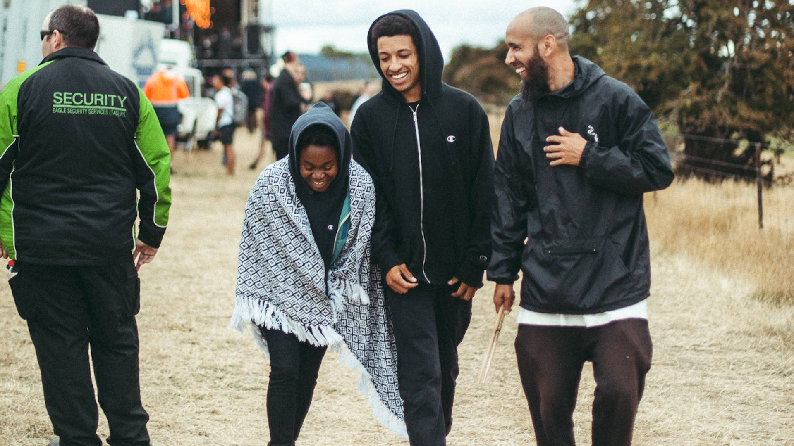

Pick a continent and see how hip hop has evolved over there!
Hip-hop music has reached the cultural corridors of the globe and has been absorbed and reinvented around the world. Hip hop music expanded beyond the US, often blending local styles with hip hop. Hip hop has globalized into many cultures worldwide, as evident through the emergence of numerous regional scenes. It has emerged globally as a movement based upon the main tenets of hip hop culture. The music and the art continue to embrace, even celebrate, its transnational dimensions while staying true to the local cultures to which it is rooted. Hip-hop's impact differs depending on each culture. Still, the one thing virtually all hip hop artists worldwide have in common is that they acknowledge their debt to those African-American people in New York who launched the global movement.
North America
source: Fat JoeLatinos and people from the Caribbean played an integral role in the early development of hip hop in New York, and the style spread to almost every country in that region. Hip hop first developed in the South Bronx, which had a high Latino, particularly Puerto Rican, population in the 1970s. Some famous rappers from New York City of Puerto Rican origin are the late Big Pun, Fat Joe, and Angie Martinez. With Latino rap groups like Cypress Hill on the American charts, Mexican rap rock groups, such as Control Machete, rose to prominence in their native land.
South America
source: Daddy Yankee
In many Latin American countries, as in the U.S., hip hop has been a tool with which marginalized people can articulate their struggle. Hip hop grew steadily more popular in Cuba in the 1980s and 1990s through Cuba's Special Period that came with the fall of the Soviet Union.
Black and indigenous people in Latin America and Caribbean islands have been using hip hop for decades to discuss race and class issues in their respective countries. Brazilian hip hop is heavily associated with racial and economic issues in the country, where a lot of Afro-Brazilians live in economically disadvantaged communities, known in Brazil as favelas. São Paulo is where hip hop began in the country, but it soon spread all over Brazil, and today, almost every big Brazilian city, including Rio de Janeiro, Salvador, Curitiba, Porto Alegre, Belo Horizonte, Recife and Brasilia, has a hip hop scene. Some notable artists include Racionais MC's, Thaide, and Marcelo D2. One of Brazil's most popular rappers, MV Bill, has spent his career advocating for black youth in Rio de Janeiro.
Reggaeton, a Puerto Rican style of music, has a lot of similarities with U.S.-based hip hop. Both were influenced by Jamaican music, and both incorporate rapping and call and response. Dancehall music and hip from the United States are both popular music in Puerto Rico, and reggaeton is the cumulation of different musical traditions founded by Afro-descended people in the Caribbean and the United States. Some of reggaeton's most popular artists include Don Omar, Tego Calderón, and Daddy Yankee.
Europe
source: Dizzee Rascal
One of the countries outside the US where hip-hop is most popular is the United Kingdom. Grime, a genre of music derived from UK Garage and drum and bass and influenced by hip hop,
emerged in the early 2000s with artists such as Dizzee Rascal becoming successful. Although it is immensely popular, many British politicians criticize the music for what they see as promoting theft
and murder, similar to gangsta rap in America.
In Germany, gangsta rap has become popular among youths who like the violent and aggressive lyrics. Some German rappers openly or comically flirt with Nazism. These references also spawned great controversy in Germany.
Meanwhile, in France, artists like Kery James' Idéal J maintained a radical, anti-authoritarian attitude and released songs like Hardcore which attacked the growth of the French far right.
In the Netherlands, MC Brainpower went from being an underground battle rapper to mainstream recognition in the Benelux, thus influencing numerous rap artists in the region.
Africa
source: PopcaanNot a lot is known about the hip hop scene in Africa but what we do know is that in Tanzania in the early 2000s, local hip hop artists became popular by infusing local styles of Afrobeat and arabesque melodies, dancehall and hip-hop beats with Swahili lyrics.
Asia
In Asia, mainstream stars rose to prominence in the Philippines, led by Francis Magalona, Rap Asia, MC Lara and Lady Diane. In Japan, where underground rappers had previously found a limited audience, and popular teen idols brought a style called J-rap to the top of the charts in the middle of the 1990s. Of particular importance is the influence on East Asian nations, where hip hop music has become fused with local popular music to form different styles such as K-pop, C-pop and J-pop.
Oceania
 source: Sampa the Great & RemiAustralian hip hop traces its origins to the early 1980s and is largely inspired by hip hop and other predominantly African-American musical genres from the United States. As the form matured, Australian hip hop has become a commercially viable style of music that is no longer restricted to the creative underground, with artists such as 1200 Techniques, Remi, Sampa the Great, Tkay Maidza, Manu Crooks, Briggs, Baker Boy, Koolism, Hilltop Hoods and Bliss n Eso achieving notable fame. Australian hip-hop is still primarily released through independent record labels, which are often owned and operated by the artists themselves. Despite its genesis as an offshoot of American hip hop, Australian hip hop has developed a distinct personality that reflects its evolution as an Australian musical style.